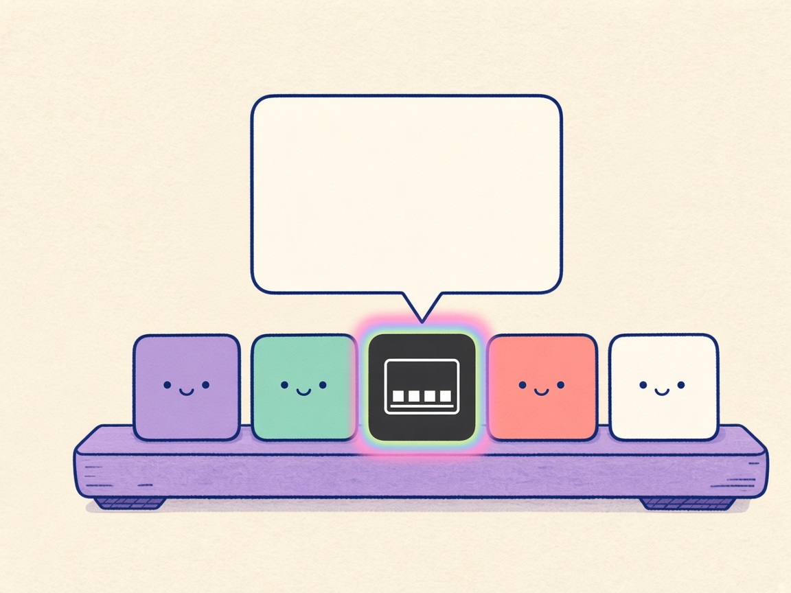

01 / Schein

Deutsch
Regenbogen
Schau, ich leuchte.
Die DOKK-Kachel trägt einen Regenbogen-Schein. Darüber öffnet sich eine Glasscheibe, und eine Spitze zeigt auf genau diese Kachel. Das Dock bleibt unten.
English
Rainbow glow
Watch me glow.
The DOKK tile wears a rainbow halo. A glass panel opens above it, and a tail points at that tile. The dock stays along the bottom.